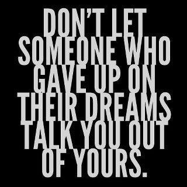

Mijn naam is Ronny Araujo, ben zeventien jaar oud en woon in Rotterdam.
1.Voetballen
2.Games spelen op de Playstation 4
Mijn doel voor deze opleiding is natuurlijk slagen en dan naar het HBO te gaan.
1.Proberen een oplossing te zoeken die iedereen goed uit komt.
2.Proberen het beste eruit te halen
1.Ik heb bij Albert Heijn gewerkt.
2.Stage gelopen bij Intertoys en Bartsmit.
Ik zat op Calvijn Meerpaal waar ik geslaagd ben.
